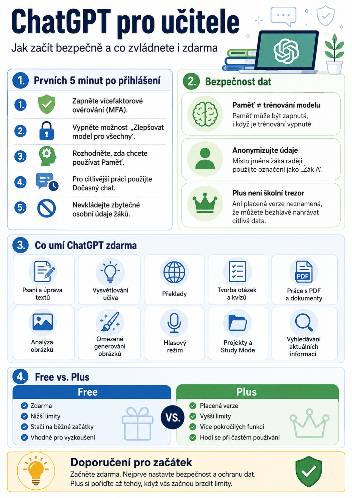

Pomůže s přípravou hodin, tvorbou pracovních listů, vysvětlováním učiva, otázkami do testů, překlady, úpravou textů, analýzou dokumentů nebo hledáním nápadů do výuky.
Než ale začnete nahrávat první materiály, vyplatí se věnovat několik minut základnímu nastavení účtu a ochraně dat. Zvlášť ve škole, kde běžně pracujeme s informacemi o žácích.
Tento návod je určen úplným začátečníkům a odpovídá možnostem ChatGPT v srpnu 2026.
1. Začněte na oficiálním ChatGPT
ChatGPT otevřete na:
Případně použijte oficiální mobilní nebo desktopovou aplikaci ChatGPT.
Přihlásit se můžete například pomocí:
- účtu Google,
- účtu Microsoft,
- účtu Apple,
- e-mailové adresy.
Pokud používáte vlastní heslo, zvolte jiné než u ostatních služeb.
2. Zapněte si vícefaktorové ověřování
První věc, kterou doporučuji po vytvoření účtu udělat, je zabezpečení přihlášení.
V ChatGPT otevřete:
a zapněte vícefaktorové ověřování (MFA).
Vedle hesla pak bude k přihlášení potřeba ještě další způsob ověření.
Je to malá změna, ale výrazně snižuje riziko zneužití účtu.
3. Vypněte používání svých konverzací k trénování modelů
Pro učitele je toto pravděpodobně nejdůležitější nastavení.
Otevřete:
a vypněte možnost:
Zlepšovat model pro všechny
Po vypnutí se vaše nové konverzace nebudou používat k trénování modelů OpenAI.
Vaše chaty přitom mohou dál zůstávat uložené v historii.
Důležité
Toto nastavení je vhodné provést jak u bezplatného účtu, tak u ChatGPT Plus.
Plus automaticky neznamená, že se vaše data nepoužívají k trénování.
To je poměrně častý omyl.
4. Rozhodněte se, zda chcete používat Paměť
ChatGPT může mít zapnutou funkci Paměť.
Najdete ji v:
Díky ní si může zapamatovat informace, které jsou užitečné pro další konverzace.
Například:
- Jsem učitel na střední škole.
- Učím angličtinu.
- Pracovní listy potřebuji většinou v češtině.
- Preferuji aktivity na 45 minut.
Nemusíte pak stejné informace psát pokaždé znovu.
Paměť není totéž jako trénování modelu
Můžete mít například:
a současně:
Zlepšovat model pro všechny vypnuté.
Pro běžné používání je to velmi praktická kombinace.
5. Na citlivější práci použijte Dočasný chat
ChatGPT nabízí také Dočasný chat.
Je vhodný například tehdy, když nechcete, aby se konkrétní konverzace ukládala do běžné historie nebo ovlivňovala Paměť.
Dočasný chat:
- se nezobrazuje v běžné historii,
- nevytváří nové vzpomínky,
- nepoužívá se k trénování modelů.
Přesto ani sem není rozumné vkládat bezdůvodně citlivé osobní údaje.
6. Základní pravidlo pro učitele: anonymizujte data žáků
Ani správně nastavený ChatGPT není školní trezor.
Proto bych do běžného osobního účtu ChatGPT nevkládal například:
Jan Novák, narozen 4. 5. 2009, žák 2EL, má ADHD, dyslexii a toto doporučení PPP…
Pro práci s AI obvykle vůbec není potřeba znát jméno žáka.
Místo toho napište například:
Žák A, 2. ročník, má potíže s delším souvislým textem a podle doporučení potřebuje kratší zadání a vizuální podporu.
ChatGPT získá informace potřebné k vytvoření materiálu, ale vy zbytečně neposkytnete identifikovatelné údaje.
Jednoduché pravidlo
AI dejte pouze tolik údajů, kolik skutečně potřebuje k provedení úkolu.
7. Opatrně s připojováním dalších služeb
ChatGPT dnes umí spolupracovat s dalšími aplikacemi a službami.
Může například pracovat s dokumenty, cloudovými úložišti nebo dalšími pracovními nástroji.
Při připojování služby vždy zkontrolujte, jaká oprávnění jí poskytujete.
Není potřeba automaticky potvrdit:
Platí stejné pravidlo jako u ostatních internetových služeb: povolujte pouze to, co skutečně potřebujete.
Co všechno zvládne ChatGPT zdarma?
Bezplatná verze ChatGPT je dnes podstatně schopnější než dříve.
Pro začínajícího učitele může být úplně dostačující.
Můžete například požádat:
Vytvoř deset otázek s výběrem odpovědí k tomuto textu.
Připrav 45minutovou aktivitu na procvičení minulého času v angličtině.
ChatGPT zdarma dnes umožňuje například:
- psaní a úpravu textů,
- vysvětlování učiva,
- překlady,
- tvorbu otázek a kvízů,
- přípravu pracovních listů,
- brainstorming,
- vyhledávání aktuálních informací na internetu,
- nahrávání dokumentů a PDF s určitými limity,
- analýzu obrázků,
- práci s tabulkami a daty,
- omezené generování obrázků,
- hlasovou komunikaci,
- používání projektů,
- Study Mode,
- používání některých specializovaných GPT a aplikací,
- omezené používání pokročilých výzkumných funkcí.
Pro běžnou přípravu do výuky toho tedy bezplatná verze zvládne překvapivě hodně.
ChatGPT Free nebo Plus?
Největší rozdíl není v tom, že by Free byl „hloupý“ a Plus „chytrý“.
Rozdíl je hlavně v limitech, dostupnosti pokročilejších modelů a nástrojů a v komfortu každodenní práce.
Free
- běžné používání ChatGPT ano,
- zdarma,
- nižší limity,
- stačí na běžné začátky,
- vhodné pro vyzkoušení,
- omezené pokročilé modely, práce s dokumenty, generování obrázků, Deep Research, hlas a Paměť,
- plánované úkoly zpravidla nejsou dostupné,
- reklamy se mohou objevit.
Plus
- placená verze přibližně 20 USD měsíčně,
- výrazně vyšší limity,
- širší přístup k pokročilým modelům,
- vyšší limity pro dokumenty, obrázky a Deep Research,
- rozšířený hlasový režim a Paměť,
- plánované úkoly,
- nové funkce často dříve,
- bez reklam.
Konkrétní limity OpenAI průběžně mění, proto nemá velký smysl učit se například přesný počet zpráv nebo obrázků denně.
Potřebuje učitel ChatGPT Plus?
Na začátku většinou ne.
Pokud ChatGPT teprve zkoušíte, začněte s bezplatnou verzí.
Používejte ji několik týdnů a sledujte, zda vás něco skutečně omezuje.
Plus začne dávat smysl ve chvíli, kdy si pravidelně říkáte:
- Zase jsem narazil na limit.
- Potřebuji pracovat s více dokumenty.
- Chci často analyzovat PDF.
- Používám ChatGPT skoro každý den.
- Generuji hodně obrázků.
- Potřebuji pokročilejší rešerše.
- Chci používat plánované úkoly a další pokročilé funkce.
Pak už placená verze může ušetřit tolik času, že se její cena začne obhajovat poměrně snadno.
Pro člověka, který ChatGPT použije dvakrát týdně na jednoduchou otázku, ale Plus příliš smysl nedává.
Pozor: Plus není školní licence
Toto je zvlášť důležité.
ChatGPT Plus je osobní uživatelské předplatné.
Není to automaticky speciální školní prostředí určené pro ukládání osobních údajů žáků.
Proto ani po zakoupení Plus neplatí:
„Teď tam můžu bez obav nahrávat kompletní dokumentaci žáků.“
Nemůžete.
Pro školy a organizace existují jiné typy řešení s odlišnými podmínkami ochrany dat.
Při práci s osobním účtem proto nadále platí:
minimalizovat data, anonymizovat a řídit se pravidly školy a GDPR.
Prvních pět minut s ChatGPT
Pokud si z celého článku chcete odnést pouze jednoduchý postup, udělejte po prvním přihlášení toto:
- Zapněte vícefaktorové ověřování.
- Vypněte Zlepšovat model pro všechny.
- Rozhodněte, zda chcete používat Paměť.
- Naučte se používat Dočasný chat.
- Nevkládejte do ChatGPT zbytečné osobní údaje žáků.
- Citlivé školní informace anonymizujte.
- Začněte s bezplatnou verzí.
- Plus kupujte až tehdy, když skutečně narážíte na limity.
A potom už začněte experimentovat
Nemusíte studovat žádnou učebnici promptování.
Začněte normálně.
Napište ChatGPT například:
Pak pokračujte:
- Uprav aktivitu pro slabší třídu.
- Přidej pět kontrolních otázek.
- Vytvoř z toho pracovní list.
- Udělej jednodušší variantu pro žáka se SPU.
Právě v tom je největší síla ChatGPT.
Nemusíte pokaždé vytvářet dokonalý prompt. Můžete s ním pracovat postupně, doplňovat požadavky a společně výsledek upravovat.
ChatGPT není náhrada učitele. Je to pracovní nástroj.
A dobrý nástroj má smysl používat tam, kde nám ušetří rutinní práci a nechá více času na to, co zatím žádná AI nenahradí — skutečnou práci s žáky.